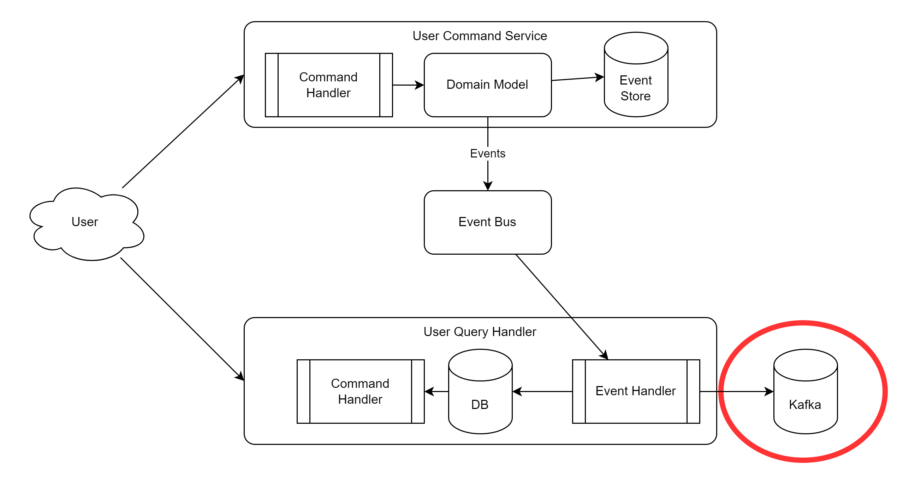

<section>
  <h3>Implementation</h3>
</section>
<section>
  <h4>CQRS - EventSourcing - Implementation</h4>
  
</section>
<section>
  <h4>Eventual consistency</h4>
  <ul>
    <li>"eventual everything will be consistent"</li>
    <li>event processing is async</li>
    <li>timespan between EventStore update and Database update</li>
  </ul>
  <aside class="notes">
    <ul>
      <li>Events are processed async by the event handler. That means, that in the time between, the EventStore will already contain the update, but the DB could still contain the old state.</li>
      <li>This is also interesting, when for example the DB is not available when the user does his change.</li>
      <li>Depending on the implementation, the EventHandler should retry until the DB is back online.</li>
      <li>It gets even more interesting, when the EventHandler writes to multiple data stores.</li>
    </ul>
  </aside>
</section>
<section>
  <h4>CQRS - EventSourcing - Kafka</h4>
  
</section>
<section>
  <h4>Current implementation in the WPS</h4>
  
</section>